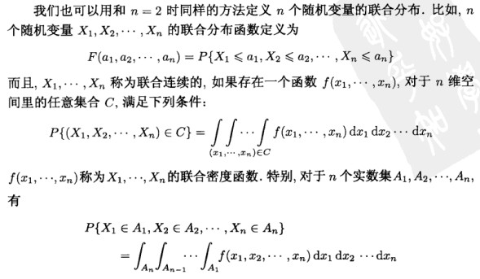

Math Theory - Probability
Table of Contents
<!– more –>
A First Course in Probability
组合分析 (1-10)
计数基本法则 1
计数基本法则
有两个试验，其中试验 1 有 m 种可能发生的结果，对应于试验 1 的每一个结果，试验 2 有 n 种可能发生的结果，则对于这两个试验来说，一共有 mn 种可能的结果。
推广的计数基本法则
一共有 r 个试验，第一个试验有 n1 种可能；对应于第一个试验的每一种试验结果，第二个试验有 n2 种可能结果；对应于头两个试验的每一种试验结果，第三个试验有 n3 种可能结果；等等。那么，这 r 个试验一共有 n1*n2*…*nr 种结果。
排列 3
按随意顺序来排列字母 a,b,c。利用推广的计数基本法则，在排列中第一个位置可供选择的元素有 3 个，第二个位置可供选择的元素是剩下的两个之一，第三个位置只能选择剩下的 1 个元素，因此一共有 3*2*1=6 种可能的排列。
对于 n 个元素的排列，依据上面分析可得，一共有 n(n-1)(n-2)…3*2*1 = n!种不同的排列方式。
组合 4
从 a,b,c,d,e 这 5 个元素种取 3 个组成一组，一共有多少种取法？取第 1 个有 5 种取法，取第 2 个有 4 种取法，取第三个有 3 种取法，所以考虑选择顺序的话，一共有 5*4*3=60 种取法。但是，每个包含 3 个元素的组都被计算了 3*2*1=6 次，所以，不考虑组内排序的话，组成方法数为：5*4*3/(3*2*1)=10

多项式系数 7

方程的整数解个数 10
概率论公理化 (21-43)
样本空间和事件 21
概率论公理 24
几个简单命题 26
等可能结果的样本空间 30
概率：连续集函数 39
概率：确信程度的度量 43
条件概率和独立性 (54-81)
条件概率 54
实例
同时掷两枚骰子，假设 36 种结果都是等可能发生的，则每种结果发生的概率为 1/36。
进一步假设已知第一枚骰子点数为 3，在这些条件下两枚骰子点数之和为 8 的概率是多大？ 解释如下：
第一枚骰子点数为 3，则掷两枚骰子一共由 6 种结果：(3,1) (3,2) (3,3) (3,4) (3,5) (3,6)。因此，第一枚骰子点数为 3 时，(3,1) - (3,6) 这 6 种结果，每种结果发生的概率都为 1/6，而样本空间中其他 30 个点的（条件）概率应该为 0。这样，在第一枚骰子点数为 3 的条件下，两枚骰子点数之和为 8 的概率应该为 1/6。
概念
假定 F 发生的情况下，E发生的条件概率记为 P(E|F)。
如果 F 发生了，那么为了 E 发生，其结果必然是既属于 E 也属于 F，即这个结果必然属于 EF。既然已知 F 已经发生，F成了新的样本空间，因此 E 发生的条件概率必然等于 EF 发生的概率与 F 发生的概率之比值。因此，有如下定义：
如果 P(F)>0，那么 P(E|F)=P(EF)/P(F)
贝叶斯公式 59
上面公式说明，事件 E 发生的概率，等于在 F 发生的条件下 E 的条件概率与在 F 不发生的条件下 E 发生的条件概率的加权平均，其中加在每个条件概率上的权重就是作为条件的事件发生的概率。
下面是关于事件优势的定义：

如果，H的条件下新的证据的条件概率大于 Hc 的条件下的条件概率时，H的优势值是递增的。反之，为递减的。
下面是 3.1 公式的推广：

下面是贝叶斯公式：
如果我们把事件 Fj 设想为关于某事件的各个可能的“假设条件”，那么，贝叶斯公式可以这样理解：它告诉我们，在试验之前对这些假设条件所作的判断（即 P(Fj)），可以根据试验的结果来进行修正。
独立事件 70
P(·|F)为概率 81
随机变量 (108-150)
随机变量 108
随机变量
进行试验时，相对于试验的实际结果而言，通常我们感兴趣有关试验结果的某些函数。例如，在投掷两枚骰子的游戏中，我们通常更关心两枚骰子的点数之和，而不是各枚骰子的具体值。
随机变量是定义在样本空间上试验结果的实值函数。
随机变量的取值由试验结果决定，由此也可以为随机变量的可能取值赋予概率。
累积分布函数(分布函数)
对于随机变量 X，函数 F(x) = P{X<=x} （-∞<x<∞）称为 X 的累积分布函数，简称为分布函数。给定实数 x，分布函数等于该随机变量 X 小于等于 x 的概率。
离散型随机变量 112
离散型随机变量
若一个随机变量的取值为有限个或可数个，则称这个随机变量为离散型的。
分布列
离散型随机变量 X 的概率分布列(简称分布列)为 p(a)=P{X=a}

累积分布函数(分布函数)
离散型随机变量的分布函数可以通过分布列 p(a)进行计算：
期望 114
如果 X 是一个离散型随机变量，并具有分布列 p(x),那么 X 的期望(expectation)或期望值(expected value)记为 E[X]，定义如下：
也就是说，X的期望值就是 X 所有可能取值的一个加权平均，每个值的权重就是 X 取该值的概率。
随机变量函数的期望 117
已知随机变量 X 的分布列，计算 X 的函数(如 g(X))的期望：
方法 1：
g(X)本身也是一个随机变量，它有自己的分布列，通过 X 的分布列求出 g(X)的分布列，然后计算 E[g(X)]
方法 2：
当 X=x，则 g(X)=g(x),因此 E(g(X))就是 g(x)的一个加权平均，每个权重就是 X=x 的概率
方差 120
设 X 的期望为μ，则 X 的方差记为 Var(X)，定义如下：
Var(X)=E[(X-μ)^2]
随机变量 X 的方差 Var(x)用于描述随机变量相对于期望值的散步程度。
伯努利随机变量和二项随机变量 121
伯努利随机变量
考虑一个试验，其结果分为两类，成功和失败。
X = 1 当试验结果为成功
0 当试验结果为失败
那么 X 的分布列如下：
p(0) = P{X=0} = 1-p
p(1) = P{X=1} = p
其中 p 是每次试验成功的概率(0<=p<=1)，上面的随机变量 X 被称为伯努利随机变量。
二项随机变量
设进行 n 次独立重复试验，每次试验成功的概率为 p，失败的概率为 1-p。以 X 表示 n 次试验中成功的次数，X称为参数为(n,p)的二项随机变量。
伯努利随机变量也称为参数为(1,p)的二项随机变量。
参数为(n,p)二项随机变量的分布列为下图：
二项随机变量的性质
计算二项分布函数

泊松随机变量 128
- An Intuitive Guide To Exponential Functions & e https://betterexplained.com/articles/an-intuitive-guide-to-exponential-functions-e/
上面利用了泰勒公式将 e^x 函数展开，相关内容请参考下面链接。
书中的描述比较枯燥，不容易看懂，可以参考下面链接中内容进行理解。
- 如何理解泊松分布？ https://www.matongxue.com/madocs/858
其他离散型分布 139
- 几何随机变量
- 负二项分布
- 超几何随机变量
- Zipf 分布
随机变量和的期望值 146
分布函数的性质 150
连续型随机变量 (171-197)
连续型随机变量的期望和方差 174
连续型随机变量
随机变量 X 的可能取值是无限不可数的，称 X 为一个连续型随机变量。
密度函数
如果存在一个定义在实数轴上的非负函数 f，使得对于任一个实数集 B，下式成立，

函数 f 称为随机变量 X 的概率密度函数（probability density function）或密度函数。
分布函数

均匀分布的随机变量 177
正态随机变量 180
指数随机变量 188
其他连续型分布 193
- Γ 分布
- 威布尔分布
- 柯西分布
- Β 分布
随机变量函数的分布 197
随机变量的联合分布 (212-254)
联合分布函数 边缘分布 212
任意两个随机变量 X 和 Y 的联合分布函数（joint cummulative probability distribution function）为： F(a,b) = P{X<=a,Y<=b} (-∞ < a,b < ∞)

理论上，所有有关 X 和 Y 的概率问题都可以通过其联合分布函数来解决。比如，如果需要知道 X>a 和 Y>b 的联合概率，那么可以如下计算：
当 X 和 Y 都是离散型随机变量时，X和 Y 的联合分布列(joint probability mass function)为：p(x,y) = P{X=x, Y=y}
如果存在一个对任意 x,y 定义的函数 f(x,y)，有以下性质：对任意实数对集合 C(也即 C 是两维空间里的集合)，有
则函数 f(x,y)称为 X 和 Y 的联合密度函数(joint probability density function)。
如果 A 和 B 为任意实数集，定义 C={(x,y) : x∈A, y∈B}，通过上面公式 1.3 可以得出：
从另一个角度来理解连续密度函数的定义：
n 个随机变量的联合分布：

多项分布

独立随机变量 218
独立随机变量的和 229
- 均匀分布的随机变量
- Γ 随机变量
- 正态随机变量
- 泊松随机变量和二项随机变量
- 几何随机变量
离散情形下的条件分布 238
连续情形下的条件分布 240
次序统计量 244
随机变量函数的联合分布 247
可交换随机变量 254
期望的性质 (272-330)
随机变量和期望 271
- 通过概率方法将期望值作为界
- 关于最大数与最小数的恒等式
试验序列种事件发生次数的矩 287
协方差、和的方差及相关系数 293
条件期望 300
- 定义
- 利用条件计算期望
- 利用条件计算概率
- 条件方差
条件期望及预测 315
矩母函数 319
正态随机变量进一步的性质 327
- 多元正态分布
- 样本均值与样本方差的联合分布
期望的一般定义 330
极限定理 (354-371)
切比雪夫不等式及弱大数律 354
中心极限定理 357
强大数律 362
其他不等式 366
用泊松随机变量逼近独立的伯努利随机变量和的概率误差界 371
概率论的其他课题 (378-388)
泊松过程 378
- 泊松过程和泊松分布的关系？ https://www.zhihu.com/question/26795397
马尔可夫链 380
惊奇、不确定性及熵 385
编码定理及熵 388
模拟 (398-407)
具有连续分布函数的随机变量的模拟技术 400
- 反变换方法
- 舍取法
模拟离散分布 406
方差缩减技术 407
Introduction to Probability Models
概率论引论 (1-10)
随机变量 (17-64)
随机过程 64
一个随机过程{X(t), t∈T}是随机变量的一个集合。